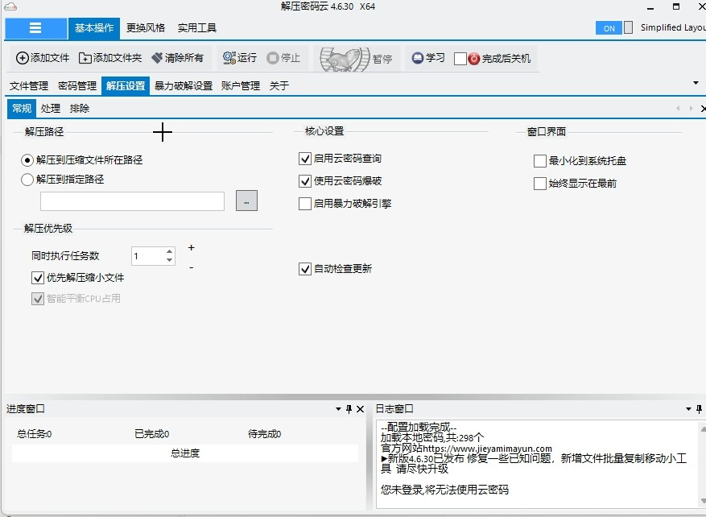
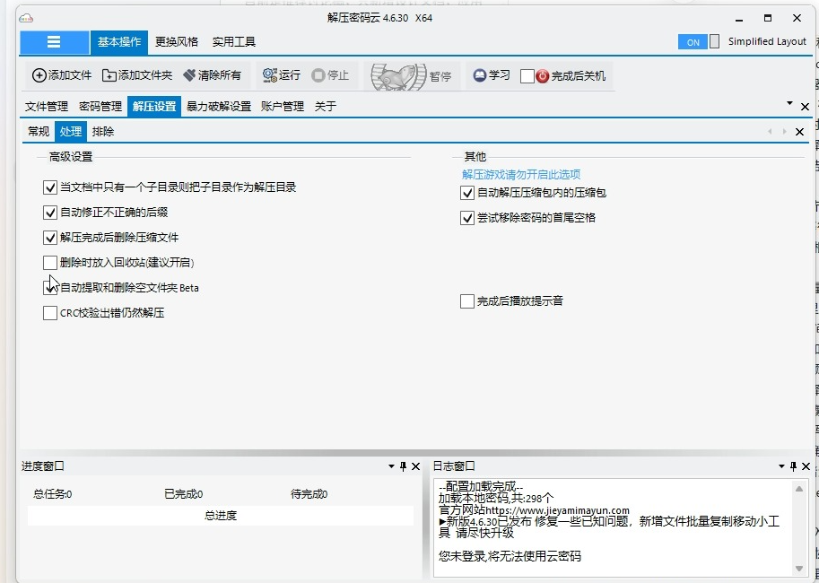
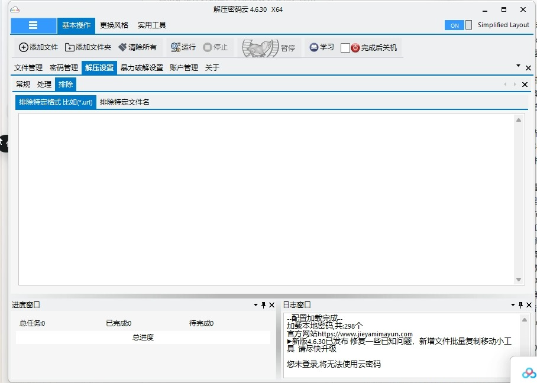

范围与目标
首版覆盖密码分组、搜索、导入与备份，有限候选轮试与成功关联，递归扫描与分卷，批量队列，可选内包展开，SSD 缓存，标准验证与目标回读，输出冲突处理、历史及异常恢复。
Windows 优先、文件与密码默认留在本机。云账户、收费查询、穷举、跨平台验收和后续工具箱不进入首版。此次只写设计文档，既有源码和早期 C# 骨架保留。
推荐决定与实施前待定项
Tauri 2 + React + Rust
现代 Web 组件负责界面；本地核心负责任务、文件与密码；独立 Worker 承担原生解压。
代价：WebView2 部署、双语言维护、原生引擎桥接。查看边界
Ant Design 主 UI 库
统一 Table、Form、Drawer、Modal、导航和主题，完整分类功能。大列表和无障碍需实测。
不把 Input.Password 遮盖当作数据库加密。查看页面
Windows 原生备选为 WinUI 3 + .NET；增量备选为 WPF + WPF UI。WPF 仍在更新。主方案选择依据是界面设计与产品路线匹配，不以换框架承诺固定倍速。
现状与需要补齐的规则
已有 软件规范 0.2、WPF 架构草案 0.1，以及未完成的早期骨架。它们没有完整运行验收。
| 旧草案问题 | 本稿的新建议 |
|---|---|
| 运行时冻结整个密码库 | 任务配置冻结，敏感租约按版本使用；允许原子编辑，等待节点受控补密码。 |
| CacheManifest 随阶段变更 | 清单不可变，描述文件与验证证据；SQLite 是任务可变状态唯一权威。 |
| 独立 Worker 与调度列为后续增强 | Worker 与按盘预算接口进入首版架构建议；实际多盘并行仍需后续验收。 |
旧稿完整保留；正式定稿时统一上述表述。当前新增建议不冒充用户已确认的所有技术决定。
三类进程角色，明确数据所有权
界面
React · Ant Design分类导航、虚拟化任务表、详情、对话框、筛选和用户命令。任务状态来自核心快照。
类型化命令 / 脱敏事件本地核心
Rust · 模块化单体扫描与分卷、任务状态机、物理盘预算、密码保险库、SSD 工作区、结果规划、验证、发布与恢复。
独占 SQLite 与保险库写入独立作业进程
解压 Worker / 传输 Worker解压写尝试目录；长时复制与回读由传输进程执行，只写批准工作区/目标临时目录。无最终改名发布权。
独立控制 / 有界数据WebView2 可能创建多个系统进程，图中是职责角色。Worker 是故障隔离边界，未加额外限制时仍有当前用户权限。
| 契约 | 规则 |
|---|---|
| 界面 → 核心 | 版本化命令与错误码；分页列表、阶段事件、快照重连。前端不读写数据库、不传文件内容、不任意启动程序。 |
| 命令权限 | 显式配置应用自定义命令权限；核心检查授权来源/目标、窗口和任务归属。不能只靠插件 capabilities。 |
| 核心 → Worker | 检查协议、子进程身份、requestId、attemptId 和运行代次；消息有界，迟到结果无效。 |
| 口令通道 | 只传当前候选，通过原生回调使用；不进参数、环境变量、日志、任务数据库或清单。 |
| 取消与退出 | 先协作取消，超时终止 Worker/子进程，确认句柄关闭后清理；主进程退出约束子进程退出。 |
完整功能分类与现代组件布局
Gemini 推荐 Ant Design 的表格、树形结构、表单和弹层体系。主 agent 修正了网站上传、可关闭脱敏、部分完成、恢复入口和误触取消等细节；具体组合效果仍需桌面 PoC。
| 主分类 | 子功能 | 入口与层级 |
|---|---|---|
| 批量解压 | 文件/文件夹添加、递归扫描结果、分卷、根队列与内包树、开始/暂停/取消、重试/移除、打开源/输出。 | 常用命令栏 + 虚拟化 Table + 选中详情；本机拖放入口。 |
| 当前任务配置 | 输出、冲突新建/跳过、密码范围、缓存模式、内包展开、保留内包、验证范围。 | 输出/范围直接可见；缓存·展开·验证摘要始终可见，具体参数进入抽屉。 |
| 密码库 | 分组、多组关联、名称/备注搜索、新增/编辑、启停/删除、成功统计、显式查看/复制。 | 分组侧栏 + Table + Form/Modal；默认遮盖。 |
| 密码数据管理 | TXT/TSV 与编码预览、重复/错误/覆盖确认、加密备份导出、恢复预览与合并。 | 分步 Drawer/对话框；与设置页共用备份用例。 |
| 处理记录 | 时间/结果筛选、来源/输出、分阶段耗时、验证范围、重试/清空；异常退出恢复与缓存清理。 | Table + 恢复 Alert；按实际状态提供重试节点、重写目标、继续发布或清理。 |
| 设置与备份 | 全局默认项、缓存路径/配额/保留空间、记录保留量、数据路径、引擎状态、备份、主题/语言/键盘、诊断。 | 分组 Form；密码脱敏固定启用，技术信息放诊断。 |
| 工具箱 · 后续候选 | 批量压缩、复制移动、重命名、类型修复；其他解密格式另行评估。 | 记录设计候选，首版不摆放无功能入口。 |
SSD：按需缓存 · 内包：展开两层 · 标准验证 配置任务…
| 归档 / 节点 | 当前阶段 | 结果 / 操作 |
|---|---|---|
| ▾ 资料归档.7z | 内层处理中 | 查看详情 |
| 外层节点 | 已提取 | 结果在工作区 |
| └ 内包.zip | 内层提取 45% | 候选 2 / 8 |
| ▸ 备份.part1.rar | 需要密码 | 补密码 / 重试 |
明/暗/系统主题使用统一 Token；中文输入、125%/150%/200% DPI、焦点保留、键盘和屏幕阅读器分别验收。Escape 关闭对话框，不直接取消任务。新增/编辑/显式查看是口令短时进入前端的受限例外，明文不进入 localStorage 或日志。
用户截图：六组设置功能对照
主 agent 已核对原软件的常规、处理和排除页，并把可见功能清单转给 Gemini。下面是复核后的分类；原截图勾选状态不作为新软件默认值。
| 分组 | 原软件可见功能 | 我们的归属与策略 |
|---|---|---|
| 输出管理 | 源目录/指定目录；单子目录采用为输出目录。 | 任务配置与全局默认；独立输出、默认保留结构，目录整理可选。 |
| 处理策略 | 内包展开、后缀修正、CRC异常继续、去密码空格。 | 内包/验证摘要可见；识别与物理改名分开，不改原密码，CRC失败不能正常成功发布；危险候选默认关闭。 |
| 性能与调度 | 执行数、小文件优先、CPU平衡。 | 性能页；首版顺序执行，受物理盘/CPU/内存预算控制，小包优先须防大包饥饿。 |
| 筛选与排除 | 特定格式（如 *.url）、特定文件名。 | 分别标“扫描输入”和“归档输出”，预览命中；无默认隐藏规则，过滤结果说明排除范围。 |
| 完成后动作 | 删除源包/回收站、空目录整理、提示音、关机。 | 首版保留源包；通知属偏好，删除/整理/关机列后续候选，默认关闭。 |
| 界面维护 | 托盘、置顶、更新检查。 | 偏好页；置顶默认关闭、自动联网需显式启用，保留手动检查入口。 |
截图还显示云查询、云获取/破解和暴力引擎，当前产品不纳入。输出排除后须显示“所选内容完成（排除 N 项）”；损坏抢救、派生密码、物理改名和删除源包需要独立策略，不能继承含糊默认。
查看用户提供的原软件截图（只作功能参考）



参考图已原样复制到 docs/reference/；没有修改原程序设置。Gemini 基于提取清单作分类，未直接读取图片。
SSD 处理与验证范围
- 最终清单直接引用节点文件，正常路径不额外复制一份 SSD 合并结果；中间层留在工作区。
- 同一物理 HDD 默认一个活跃 I/O 阶段；涉及多盘时一次取得整组许可。盘符不同不等于物理盘不同。
- 实时占用、未消耗预留和保留空间分别计算；失败尝试/等待工作区也占配额，预留转实占不重复计数。
- 每个内包独立候选与结果；部分交付需显式选择，保留未展开内包及原因，不计全部成功。
| 模式 | 实际验证 | 界面如何说明 |
|---|---|---|
| 标准 | 提取时摘要 + 引擎结果；写回时从源流计算摘要并比较，检查读写错误与数量/大小。 | 标准验证完成；未完整回读目标。源流摘要不证明目标物理存储。 |
| 完整目标回读 | 写回后刷新并读取目标，按期望摘要比对；记录真实读取方式。 | 完整回读结果与范围。未实测时不声称绕过系统缓存或保证断电持久性。 |
完整来源指纹、采样指纹和元数据指纹分开；强密码关联只用完整内容指纹。哈希、解码、创建小文件和 HDD 最后写入仍需时间。
错误处理、防死锁与无进展处置
先区分普通错误、资源等待、无进展和循环死锁。心跳与超时用于发现和处置异常，不是无死锁证明；没有等待循环证据时，界面显示“未响应”或“暂无新进度”。
| 情况 | 处理与恢复 |
|---|---|
| 密码耗尽 / 缺卷 / 坏包 / 校验失败 | 影响当前节点，等待补密码/卷/新源后再试；含歧义的引擎错误不强判成密码错误。 |
| 空间不足 / 设备不可用 | 暂停依赖该资源的任务，确认停止后释放临时许可；保留文件继续占配额，给出换位置/清理/调配额入口。 |
| 短暂占用 / 数据库繁忙 | 有限次数与总期限的退避；旧快照需释放并重新校验。不可写/损坏不当作普通繁忙，更不创建空库覆盖。 |
| 作业崩溃 / 未响应 | 独立探测、协作取消、必要时终止进程树；确认真实退出后新进程/新操作重试，未确认不清理或复用目录。 |
| 发布提交结果不明 | 进入发布待核对，依据意图与归属恢复；不盲目重复发布或删除可能已交付的结果。 |
| 清理 / 密码记录保存失败 | 保留文件完成状态，显示独立提醒，幂等处理后续动作，不重新解压成品。 |
- 状态锁只做短内存操作，不跨 await、不持锁等待 I/O 或其他组件；数据库事务不等待用户、Worker、保险库或发布。
- 阶段所需物理盘、执行槽位、CPU/内存由统一准入一次授予整组，拿不全就排队，不持部分许可等待。
- 额度增长被拒后停到可确认边界，进入空间不足；不能占着执行名额等待只能由自身完成后释放的空间。
- 取消/探测使用独立控制接收路径，数据接收器持续排空；普通进度可合并，终止/错误/结果不静默丢弃。
- 长时解压、复制与回读隔离到作业进程。异步超时或 abort 不能可靠强停已开始的阻塞线程。
- 监视阶段、最后控制/引擎/读写回应、等待对象和许可持有者；真实退出与句柄关闭前不回收资源。睡眠恢复后重新探测。
界面区分等待资源、无新进度、作业未响应、正在停止、停止待确认、发布待核对与完成后处理待办，提供实际可用动作。系统设备卡死时不能承诺固定秒数停止；无退出确认就保留归属和工作区。
新增验收：单 Worker 嵌套、反向盘资源申请、额度拒绝、持续数据库繁忙、进度洪泛/接收器停读、原生或传输作业失联，以及这些状态下取消；发布改名后退出仍须保留成品。记录等待图与资源最终释放，不以“没超时”证明无死锁。
技术依据：Tokio 状态与锁、阻塞作业限制、SQLite 隔离、Windows 进程树。本节是设计约束，尚未实现或演练。
唯一状态权威与恢复提交点
| 存储 | 所有者与内容 |
|---|---|
| SQLite | 核心单写入者；任务/节点/尝试、工作区、发布意图、成功 outbox、格式版本；不存口令。 |
| 账户保护密码库 | 当前用户 DPAPI 全库保护，原子替换；加密/读取失败禁止明文降级或空库覆盖。迁移备份另设口令。 |
| 不可变清单 | 文件版本、路径映射、大小、摘要与能力证据；不与数据库争夺可变阶段。 |
| 配置 | 无口令的全局默认值；根任务开始时冻结配置快照。 |
发布意图先落库 → 目标卷临时目录复制验证 → 归属和准备状态 → 同卷非覆盖改名 → 数据库提交发布与成功事件 → 独立清理。名称冲突变更先更新意图。
改名成功后保留成品。改名后数据库未提交，核对意图、归属和必要内容证据后补记；无法确认则等待处理。成功 outbox 携带密码 ID 与口令版本，只有仍存在且版本匹配的记录才按 eventId 幂等更新；改口令或删除后跳过关联并确认事件，不重复计数，不把旧成果关联到新口令。
多个存储没有共同原子事务。清理前核对工作区归属、引用与活跃句柄，不能仅凭目录存在推断成功。
验收矩阵与完成标准
| 验收面 | 必须观察的结果 |
|---|---|
| 路线 PoC | 建议一万任务样本，列表虚拟化/高频更新；中文输入、真实文件夹拖放、键盘/DPI；干净机器完全离线安装。 |
| 原生引擎 | 真实加密 ZIP/7z/RAR、固实与各分卷；密码回调、增量摘要、取消、Worker 崩溃后界面可操作。 |
| 嵌套与部分完成 | 普通文件保留，内外不同密码、缺密码/坏内包、仅重试失败节点、最终映射和根结果准确。 |
| 发布与恢复 | 每个发布窗口强制退出；未发布不算成品，已发布保留，不覆盖无关目录、不重复成功计数。 |
| 资源与验证 | 缓存/目标满、拔盘、未知展开大小、同物理盘多卷；标准无额外完整目标回读，严格回读确实验证目标。 |
| 数据与性能 | 错口令/账户保护失败不覆盖现库；参数/日志/数据库/清单无口令；相同源和目标比较全部耗时与峰值占用。 |
当前完成标准是设计边界、契约、状态、数据、UI 分类和验收规则可供评审；尚无构建、真实解压、性能或原生桌面验收。性能阈值与依赖版本由后续 PoC 锁定。
后续实施、迁移与交付
- 路线 PoC：UI/桌面交互与引擎桥可并行，先对齐协议。
- 契约与核心：状态机/任务树先行，保险库、SQLite、Worker 按契约并行。
- 处理管线：单层真实回归后接双层、SSD预算与可恢复发布。
- 验收与交付：故障窗口通过后做性能、UI和安装检查，再锁定依赖与发行材料。
未来代码组织建议：desktop-ui / desktop-host / domain / application / infrastructure / protocol / archive-worker / 必要的薄原生桥。当前不创建工程，不删除或迁移旧骨架。
各数据格式版本化，迁移前备份；失败回到旧程序与迁移前状态，源包和成品不作为回滚删除对象。Tauri Windows 交付须处理 WebView2，离线安装组件会增加包体；提供常规与离线安装路径。
风险与应对
- 原生 ABI、输出摘要回调和取消：作为 P0 硬门槛，不能用不安全的 CLI 密码参数规避。
- WebView2、中文输入和无障碍：以真实桌面和离线机器验收，不用网页样例替代。
- 任务规模、SSD 空间和恢复窗口：有界队列、预算、版本化协议、故障注入与单一状态权威。
- 开源依赖：锁版本、保留通知与所需源码材料，单独核对引擎分发要求；应用许可不覆盖第三方许可。
来源与证据
已读软件规范、旧架构及 Gemini 只读 UI 提案。以下使用官方资料核对框架和组件；文中的系统设计规则是提案，不是上游承诺或实现证据。
本次交接
只更新此 HTML 与 完整技术稿，并保存用户提供的参考图；应用源码、旧稿和个人数据保持原样。可继续讨论主方案；用户明确恢复代码开发后，先做路线 PoC，再进入完整实现。